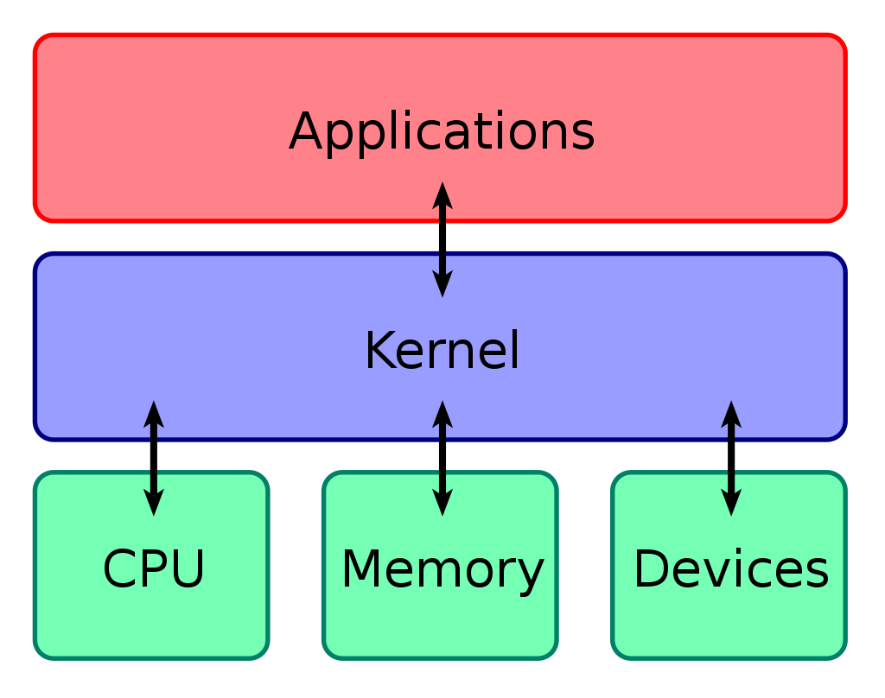
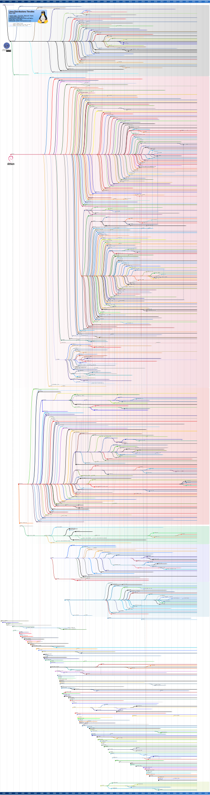

Introduction
Important Fundamentals & Definitions
What is an Abstraction?
At the end of the day everything on a computing system is a binary data field. 0s and 1s. However, manually dealing with the bits required to perform any task meaningfully is impossible for a human. Especially on a modern computer. This is why we deal with abstractions in the computing world. Such that, everything on a computer that isn't a bit, is technically an abstraction. However, generally, bits are abstracted in some way that is then abstracted itself, and then that abstraction is abstracted... and so forth. Here we would say there are layers of abstraction. From your web browser, to your text editor. To your operating system user account and your graphical user interface. To your email client and the internet connection you use to send mail. The very text you now read to data types such as ints or floats in your favorite programming language. are all abstractions of some more fundamental data structure. The details of which are obfuscated by the abstraction to make the data more digestible and usable by a human.
Unix and Unix-like operating systems such as Linux utilize abstractions that differentiate this family of systems from others, And arguably these abstractions make Unix-like operating systems unparalleled in their simplicity, in an almost magical way.
Files
In Linux everything is a file... for our purposes at least. The implications of this are far reaching. On Linux, you can easily access and manipulate data in a way unparalleled by other systems. Data isn't accessed using APIs, function calls, or lookups in databases or registries. Fundamentally, all the information you'll need is just in a file somewhere. And all the information being exchanged by processes and resources are simply being exchanged between files or landing in a file somewhere on the filesystem. Furthermore, files on Linux are typeless. The metadata for a file isn't stored in the file itself, but somewhere else called an inode. Therefore, the data in files is agnostic. It's just data. Meaning data can be exchanged between processes and resources in Linux extremely easily. And even the state of lower level system information is reflected as files on the filesystem via the /proc directory. This kind of convenient and direct access to the system state, and all information on the system for that matter, puts Linux above the rest in terms of accessibility. Much more on files, inodes, and /proc is discussed in the later chapter: File Structure, File Systems, & Permissions
Pipes & Streams
Recall for the previous section that files are typeless, and that the data in files is more or less agnostic. If you combine this notion with the utility of pipes and streams, the power of the Unix design philosophy is realized and apparent. A pipe is an operator that sends the output of a command, program, or process to the input of another. And all programs utilize data streams that carry data to the ins and outs of other programs. And the data in these streams can be redirected to other streams by the user. If you combine this concept with data agnosticism, you have a system where all programs follow a standard that allow them to interact and communicate directly with every other program. THIS IS POWERFUL Programs can effectively be stitched and glued together to accomplish anything on the system. The power at the fingertips of a user of a Linux system is extraordinary because of this. You will learn more about pipes and streams and how to use them in the later chapter: Terminals, Terminal Emulators, Shells, & the Command Line
What is a Kernel?
An operating system kernel is essentially software that provides basic services, and manages system resources and hardware. The kernel is the innermost part of the system with the greatest privileges and access. This part or space of the system where the kernel resides and operates is called kernel space. Whereas the outermost part of the system where a user operates and has access is userspace or userland. The kernel allows the system, and thus the user, to communicate with the hardware of the computer, as the kernel has access to that hardware via modules and drivers. Conversely, the kernel also allows hardware to interact with the system.
 An extremely simplified layout
This book will not be a deep dive into the kernel. At most you will learn what the kernel is, how to install drivers and un/load modules, how to choose a kernel at boot, and how to compile a custom kernel. And that Linux is technically only the kernel, and the userspace is primarily a GNU project. Sticklers will (mostly jokingly) refer to our beloved operating system as GNU/Linux exclusively. However, in common parlance, and for the rest of this book, we refer to the operating system as Linux.
Distributions
What is a distribution?
A software distribution or distro is a version of that software that has been altered or comes with a collection of predecided and curated components or other software out of the box. Many popular programs from web browser, to text editors, to operating systems have various distros that can be chosen from. The process of creating a distribution of software can be called forking, because that software is now forking or branching off into something else. And maybe that fork will be forked itself. This process of creating and forking new distros of software can create a tree like structure with branches spanning out from other branches based on the distros' familial relationships.
Linux Distributions
And Linux is definitely no exception. There are countless distros, sometimes referred to as flavors, currently in active development and maintenance. The vast amount of distros can be daunting and even paralyzing to a new user, but it seems that these sentiments arise from misconceptions regarding the differences is distros.
 Depiction of the vast tree of Linux distributions that makes you scroll a lot
The above image that depicts the family tree of Linux distros lays out multiple main or root distros, as in they are not based on anything else, and have many descendants. Generally, the most relevant main distros are:
- Debian
- Arch
- Red Hat
These three distros and their derivatives are widely used by larges enterprises, companies, and individual users. Furthermore, there are independent distros that are not based on anything, and have very unique and esoteric quirks. So there are quite a few options, but how do you know which to choose?
The Differences
Most distributions are going to have aesthetic and functional differences between the graphical user interfaces that come pre-installed on the system. However, in many cases this is simply an aesthetic difference that can be changed as distros often support multiple graphical environments. You will learn more about graphical user environments or GUIs in the later chapter: Elements of a Linux Graphical User Interface. This is also true for most software that is installed by default on a distro; it can simply be uninstalled or replaced. Beyond these aesthetic and more ephemeral differences, there are three more non trivial differences between distros:
- Update Delivery
- Package Availability
- Initialization System
Update Delivery
There are three types of software update delivery paradigms on Linux. There is rolling release, fixed release, and semi-rolling release. A fixed release distro such as Red Hat or Debian have versions that are updated annually along with software repositories. Usually available software on these distros can be relatively dated. A rolling release distro however does not have versions. Instead the latest software is available as it become available. In this case you have access to the latest versions of software. And a semi-rolling release is a combination of the two, where a major update is rolled out annually, but users have access to the latest software in most cases. All this being said, distros that are fixed usually are more stable and more free of bugs, issues, and conflicts, and suited for use on servers.
Package Availability
Distros differ in that some have more programs or packages available for install than other. This is because those who maintain the distro have made that software available within that distro's repositories. You will learn more about packages and software repositories in the later chapter Packaging Systems & Package Management.
Initialization Systems
Some distros have different initialization or init systems. The most prominent init system is SystemD. Other init systems exist, but are found on systems far less today. You will learn about init systems in the later chapter: .
Recommendations
This book will be using Fedora for all examples and snippets. Fedora is an excellent choice because it is well supported semi-rolling distro that has fresh packages and a welcoming graphical user interface by default for new users. However, you can choose any distro you want. Some are less beginner friendly and will differ in a few ways, but the differences won't be vast enough to prevent you from following along using another distro if you refer to that distro's documentation.
Here is a table of some possible options for you.
| Main Distro | Update Delivery | Popular Distros Derived From |
|---|---|---|
| Debian | Fixed & Rolling | Ubuntu, Linux Mint, Pop OS!, MX Linux |
| Arch | Rolling | Manjaro, Garuda, Arcolinux |
| Red Hat | Fixed | Fedora*, Rocky Linux |
| *Fedora is semi-rolling |
Installation
Booting
Terminals, Terminal Emulators, Shells, & the Command Line
test